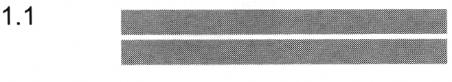

разметка 1.1
Приложение 2 (дорожная разметка)
Закон Грузии «О дорожном движении» № 1830-რს, консолидированная редакция 25.06.2026 (Matsne, публикация 36). Юридическую силу имеет грузинский текст, русский — перевод. Источник: Matsne (рус.), Matsne (груз.).

Текст (рус., дословно)
1.1. Разделяет транспортные потоки противоположных направлений и обозначает границы полос движения в опасных местах на дорогах или границы проезжей части, на которые въезд запрещен; обозначает границы стояночных мест транспортных средств и границы проезжей части, которые условиями движения не относятся к автомагистрали. Линии разметки 1.1 пересекать запрещается. Допускается пересекать линии разметки 1.1, обозначающую край проезжей части дороги и располагающуюся справа от водителя, для остановки транспортного средства на обочине дороги.
Официальный текст (груз.)
1.1. ყოფს საპირისპირო მიმართულებით მოძრავ სატრანსპორტო ნაკადებს და გზის სახიფათო მონაკვეთზე აღნიშნავს მოძრაობის ზოლის საზღვარს ან სავალი ნაწილის საზღვარს, რომელზე შესვლაც აკრძალულია; აღნიშნავს სატრანსპორტო საშუალების დგომის ადგილის საზღვარს და იმ გზის სავალი ნაწილის ნაპირს, რომელიც მოძრაობის პირობებით არ განეკუთვნება ავტომაგისტრალს. 1.1 ხაზის გადაკვეთა აკრძალულია. დასაშვებია სავალი ნაწილის ნაპირის აღმნიშვნელი და მძღოლის მარჯვენა მხარეს განლაგებული 1.1 ხაზის გადაკვეთა სატრანსპორტო საშუალების გზის ნაპირზე გასაჩერებლად.
Где это в курсе
Билеты, которые на неё ссылаются (6)
№ 27 № 271 № 310 № 383 № 384 № 435
По ссылкам на закон в пояснениях базы (с учётом наших уточнений онтологии).
Ссылаются в законе
Постоянная ссылка: norm/mark-1.1.html